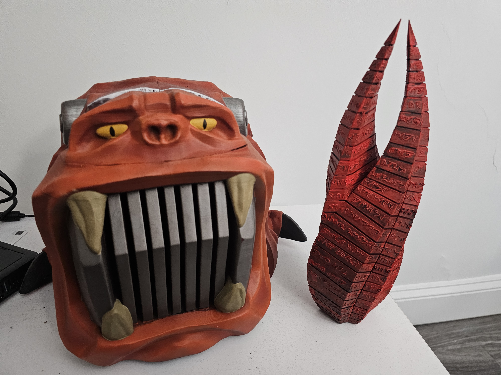

So you want to know about 3D Printing!
3D printing is a fantastic hobby that can get even the most initiate people to start out with. All you need is a printer and computer.
Printers may very in size and shape but all of them when used with care and creativity can create fantastic maybe even functional works of art.
What a 3d printer is a machine that takes coordinates based on the XYZ scale and to make a model out of stringed filiment.
Give the machine some time to cook and before you know it you'll have a full or a start to a piece of art.
So Many possibilities!

My dog Jack is 3 years old. My parents adopted him from a shelter that rescues pets from kill shelters. We think he is a Labrador-Pitbull mix, black with white markings. By the time he got to our home he was skin and bones, literally. After about a month his belly filled out, as we feed him really well.
Jack is now truly a member of our family. If he’s not running around the yard and rolling in the grass he’s begging for food like a gentleman at dinner, or just plain simple is guarding the house. Sometimes he takes that job a little too far and ends up in his crate. While I was home I saw what this was like first-hand. I counted the times he growled and scratched at the front window as people and other dogs went by:
Day Wednesday Thursday Friday Saturday
Times at Window 3 5 4 3
He also wears a correcting collar if this gets too out of hand. We may need to ask his vet what more we can do. But I think he guards us because he loves us and knows how nice his home is.
His hobbies are going for long walks, and like other dogs goes to nap later on the softest thing he can find. Those things are usually my bed or the upstairs couch. He has several toys and can do some tricks like sit and stay. My dad has also taught him to “talk” as he says “out” when he needs to go.
Jack is a great dog and has a special place in my heart.